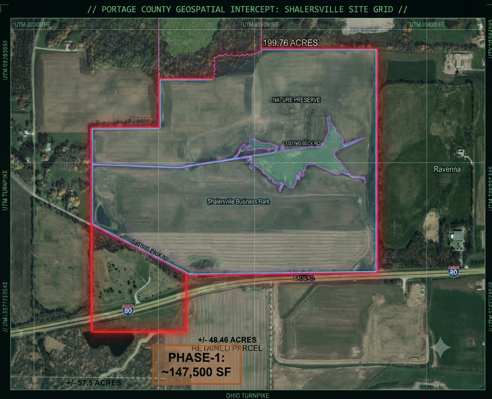

INTEL BRIEF: PARCEL INTERCEPT & ACOUSTIC MONITORING
Published: September 18, 2026 - Wendy DiAlesandro | Classification: Field Evidence & Data Intercept
Detailed master-planned footprint and localized noise audit metrics for the proposed Shalersville data center corridor.
// INTERCEPT: TURNPIKE COMMERCE CENTER PARCEL MAP //

Master-planned parcel layout and phase breakdown for the proposed Bitdeer campus footprint in Portage County. (Click map to open source article)
ACOUSTIC MONITORING & DECIBEL THRESHOLDS
Geis representatives have formally proposed that the campus be permitted to exceed current ambient noise levels by 10 decibels at property boundaries. Because the decibel scale is logarithmic, a 10 dB increase represents a tenfold increase in physical sound intensity.
INDEX & VERIFIED SOURCE DIRECTORY
All intelligence compiled for this drop is backed by the following primary public records and local news reporting: